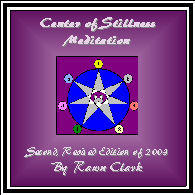

Center of Stillness
Meditation

I wrote the original CSM article in 1995 [the text version of which can be found by clicking here], but it wasn't until January of 2002 that I recorded the first audio version. The present "Second, Revised Edition of 2003" was recorded April 19th, 2003.
The CSM article outlines a mystical process that I personally employed in my own "Abyss crossing". Consequently, it's very broad in scope. At its foundation however, is a very simple meditation technique rooted in the conscious negation of the senses, and it's this core technique that the audio version guides the listener through.
I devised the core technique (selective negation of the senses) of the CSM some ten years earlier in response to the sensory concentration exercises found in Step Two of Franz Bardon's, "Initiation Into Hermetics". These particular exercises demand that a very focused attention be given to one sense at a time, to the exclusion of the other senses. So I came up with a method of negating one sense at a time and thereby isolating just the specific sensory input I was working with in the exercise.
However, during the initial implementation of the technique, I discovered that there are two additional sensory inputs, beyond the traditional five physical senses, that offered distraction to my focus. These were my emotional state and my mind's chatter. Both were just as distracting (if not more so) as the input from my other physical senses, so I added them to my list of sensory inputs that needed negating. Thus was born the core technique of the CSM which consciously negates the inputs from *seven* senses:
1) Taste
2) Smell
3) Touch
4) Sight
5) Hearing
6) Emotional Tone (the impact of the astral senses upon the body)
7) Mind Chatter (the impact of the mental senses upon the brain)
When all seven of the senses have been negated (i.e., ignored), an inner calm results and this is the first level of the "Central Stillness", after which the technique is named. Reaching this preliminary state of inner calm opens awareness to the perception of inner realms that the senses normally hide from view. The audio recording guides the listener through a brief journey of these inner realms and then ends with a thorough re-integration of the senses.
The CSM has proven itself very useful to the Bardon work of Hermetic self-initiation. It aids in the development of mental discipline; in deepening the emptiness or vacancy of mind; in success with the aforementioned sensory concentration exercises; and in just about every meditational endeavor found in Bardon's work. Its number of possible applications are uncountable. It's the type of technique that evolves with use and welcomes personalization.
The audio version of the CSM is available in downloadable .MP3 format or as an audio CD (playable on any CD player). Each CD cover is personally autographed. :)